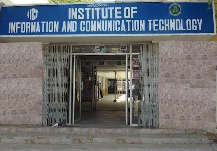

Welcome to the Faculty of Engineering and Technology
Introduction
Faculty of Engineering and Technology (FET) working since 1979 at University of Sindh to extend its scope as an ideal for Information Technology education at national and international levels. The institute imparts cutting-edge education with outstanding quality through its highly qualified faculty at undergraduate graduate and posts graduate levels to produce top-notch professionals in core IT related disciplines.
Phenomenal rapid development of technology led the University of Sindh to establish independent Faculty of Engineering And Tecnology, bifurcating the former Intstitute of Information and Communication Technology ealier known as Institute of Physics & Technology working since 1979, to extend its scope as a beacon for Information Technology education at national and international levels.

Currently (2020) the nomenclature of the faculty has been designated as Faculty of Engineering and Technology (FET). The FET imparts cutting-edge education with outstanding quality through its highly qualified faculty at undergraduate and graduate levels to produce top-notch professionals in core IT and Engineering related disciplines.
The Faculty of Engineering and Technology has one (1) instiute and six (6) departments. Dr. Abdul Hussain Shah Bukhari Institute of Information and Communication Technology previously known as Institute of Information and Communication Technology offers the postgradute programs of Information Technology, Software Engineering, Electronics and Telecommuncation.
FET has six departments including
- Department of Electronics Engineering previously known as Departmenent of Electronics
- Department of Telecommunication Engineering previously known as Departmenent of Telecommunication
- Department of Software Engineering
- Department of Information Technology
- Department of Industrial Electronic Engineering
- Department of Telemedicine and E-Health
These six departments offer undergraduate programs in six discipline components of Electronics Engineering, Telecommunication Engineering, Information Technology and Software Engineering, Telemedicine & E-Health and Industrials Electronic Engineering
In addition, The Department of Information Technology and The Department of Software Engineering also offer Evening programs in the disciplines of Information Technology BS(IT), Software Engineering BS(SE). The FET aims to produce graduates with learning outcomes necessary to design hardware and software systems, apply the technologies effectively for diverse environments, adopt analytical and logical approach, and foster independent judgment and ability to work cooperatively with others.
FET offers MS, M.Phil and Ph.D degree programs, in Dr. H. S Bukhari Institute of Information and Communication Technology, and has been enrolling students since its inception in addition to its Bachelor level programs. The faculty always makes continues quest to publish its research work in Journals of National and International repute. The Institute is well furnished with all required infrastructure of excellent learning including state-of-art computer, electronics, and communication laboratories connected to information cyberspace via PERN link of 128MB bandwidth, spacious class rooms with multimedia facilities, the information resource, internal library, other than center library, located within the premises of FET with abundant and dynamic collection of books, journals and magazines related to the disciplines being offered and provides indoor and outdoor co-curricular and extra co-curricular facilities for students.